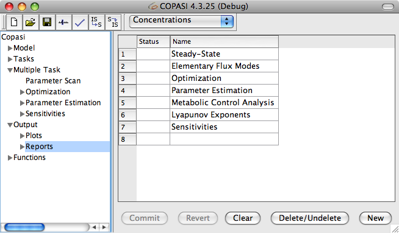
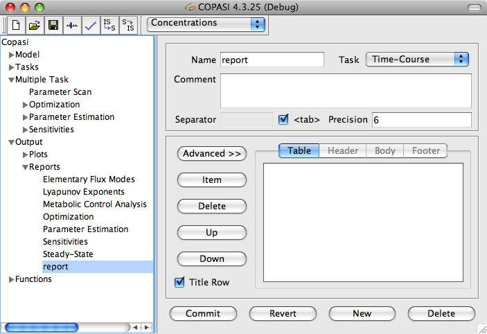
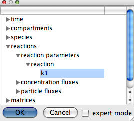
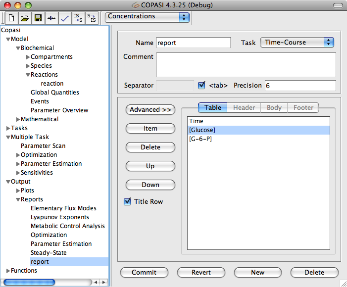
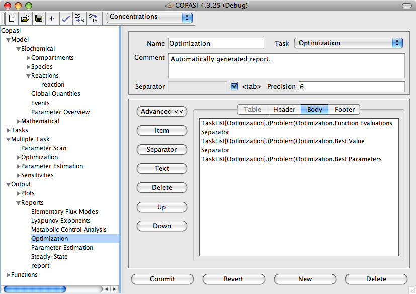

This section describes how to create or edit a report definition. Keep in mind that you still have to select this report for the specific calculation task you want to perform. You can do this (and also choose a filename to write to) using the Report button as described below in the sections about the different tasks.
|  |
| Report Table with default Reports |
The dialog for defining report definitions is located under the Output->Reports branch in the object tree. Double clicking on an empty row in the table creates a new report object and opens the dialog for modifying the report definition. In this dialog, you can specify a name for the report in the Name field. From the Task drop down list, you can choose for which kind of task this report should be written. So if you want to store the result of a time course, you should choose
Time-Course here. The report usually stores the results of its task as a table; the standard separator character for elements in this table is the tab character (\t). If you want to have another character as the separator field, you have to uncheck the <tab> check box and specify the separator character or string you want in the Separator field.
Beside the <tab> check box there is another input field labeled Precision. With this field you can specify how many significant digits are used for numerical output. The default value is 6.
If you want to, you can also add a comment for the report, e.g. you could state what this report is supposed to represent.
|  |
| Simple Object Selection Dialog |
Next you have to define the objects that you want to appear in the report. There are two modes to define a report definition. Per default, the report is laid out as a table. For example, the report for a time course simulation will write one line per time step and each line will typically contain the time followed by one or more species concentrations. In the advanced mode activated by clicking on the button labeled Advanced, the report is split up into three sections, a header, a body and a footer. You can define the output for each of the sections separately by clicking on the corresponding tab. In order to get back to the standard table layout, you have to click on the Advanced again. COPASI will warn you that you might loose some information by converting from the advanced report definition format to the table format.
Let us discuss how to define a report definition with table layout first since you will probably use this most of the time. To add a new object to the report definition, you have to click on the button labeled Item. This will open the object browser dialog.
|  |
| Object Browser Dialog Expert Mode |
The selection dialog shows a tree that contains what we think are the objects that would be most commonly used in generating report, plots, sliders etc. You select objects by clicking on the corresponding leave in the selection dialogs tree view. For plots and report, the simple selection dialog will allow you to select several objects at once. To select a continuous range of objects, you select the first object of the range, then you press and hold the SHIFT button and select the last object in the range. You can also make non-continuous selection by holding down the CTRL key while clicking on the object to select/deselect. Also selecting a whole branch in the selection dialog will select all the leaves under that branch.
If this simple selection dialog does not contain the object that you want to include in your report, you can activate an extended selection tree by activating the expert mode check box. The tree you now see contains all objects COPASI knows about. In this tree, the objects belonging to your model are located in the branch that corresponds to the name of your model. The position of that branch varies since the branches are sorted alphabetically. The selection that you have already made in the simple selection tree should be preserved, and vice versa. Any selection you make in the full tree is preserved when you switch back to the simple tree. Each branch of the full tree has a check box up front which can assume three states. The unchecked state means that no objects in this subtree are selected. A check mark on a black background means that the whole subtree is selected, i.e. all objects in this subtree are selected. A check mark on a gray background means that part of the subtree is selected.
Due to the model structure, most objects appear more than once in the tree.
So do not be surprised if you select some objects you may be see that not only the selected objects will suddenly change their selection state. E.g. if you select the whole Compartments subtree of your model, all the species which are part of the compartments get selected as well, which means that on selecting the Compartments branch, the whole Species branch changes its state to be selected.
Let us assume you want to define the report for a trajectory task in expert mode. In this case, you will probably want the time and some or all of the transient concentrations of the species in your report. The time for the time course is the last item in the Model branch, you select it by clicking on the check box in front of the name. If you want to add the concentrations of all species, you open the Species sub-branch in the Model branch and open the Select by attribute branch. There you can select the Concentration attribute. Selecting the Concentration attribute will select the concentrations for all species. If you only want to have some of the species in your report, you open the sub-branches of the wanted species in the Species branch and select the Concentration attribute only for those species. If your model contains many species and you want to have all except one species in your report, it is often easier to first select all concentrations via the Select by attribute branch and then deselect the one you don't want, rather then selecting the individual concentrations you want. Once you are finished with selecting the objects for your report, you confirm the selection by clicking the OK button in the selection dialog. The objects you selected will now appear in the list box of the report definition dialog.
|  |
| Report Definition Dialog |
They will appear in the report in the same order as they appear in this list. To reorder the entries in the list, you can select individual entries and move them up and down in the list with the corresponding buttons on the left of the list. For example it might be a good idea to move the time object to the top of the list so that it will appear as the first table column in the file since this is the way most programs would expect it. Also in order to delete unnecessary items, you just select them and click on the Delete button. The only thing that is now left is to connect this report to a file. This has to be done in the dialog for the specific task and we will cover this when we explain how to run the individual tasks.
The report we just defined will be written in the form of a table. So if this is a report for a time course simulation, the final output would have one line per time step of the simulation and in each line, each object that is in the list would be written once separated by whatever you defined as your separator character (Normally this would be the <tab> character).
Per default, the check box labeled Title Row is activated, which means that COPASI will write a header line before the table with the names of the objects that make up the individual columns. If you don't want such a header in the output you have to deactivate this check box.
|  |
| Advanced Report Definition Dialog |
As stated above, the advanced report definition allows you to define the output for the three parts of the report separately. The
header part of the report is written once before the corresponding task, the output of the
body elements occurs once per step of the corresponding task, e.g. for the time course once every time step, and the
footer is written once after the task has finished. In this sense, the standard table report definition is nothing but an advanced report definition with a title header and a body that consists of the time and some species concentrations separated by separator items. The footer is empty. If you write your own advanced report definition, you are responsible to add separator tags where appropriate. An advantage to the advanced report definition is that you can add arbitrary text to any of the three sections. Everything else works as described for the standard report definition, you can add and delete items by selecting them from the object browser dialog. You can also move these items up and down by selecting them and clicking on the Up or Down button. Separator items can be added by clicking on the Separator button. The symbol or text that makes up the separator item is again defined by the check box and the adjacent input field towards the top of the report definition dialog.